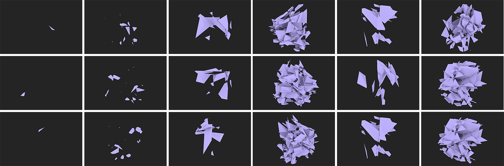
Active Polyhedral Scene Matching
Matching Polyhedrals only based on visual input in an active fashion is far from trivial. In short My solution consists of four main modules: observation, feature extraction, comparison, active motion policy. Observation module receives a camera position and object ID from the Active Policy module and presents an image of the object. Feature extraction takes in the observation and creates informative features from it. Comparison module takes in those features and decides whether the two objects are the same. Such decision is then propagated to the Active Motion Policy where the next observation position is created.
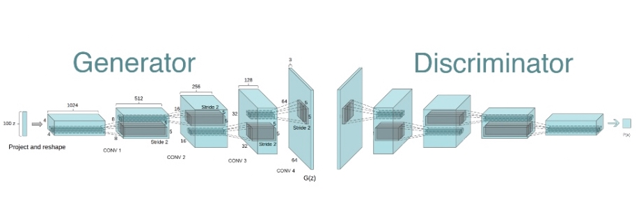
Deep Convolution Generative Adversarial Network (DCGAN)
Supervised learning with convolutional networks (CNNs) has seen huge adoption in computer vision applications. Comparatively, unsupervised learning with CNNs has received less attention. In this project, adopting from the original paper, I implement a deep convolutional generative adversarial networks (DCGANs), that have certain architectural constraints, and demonstrate that they are a strong candidate for unsupervised learning. Training on CFAR10, I show convincing evidence that our deep convolutional adversarial pair learns a hierarchy of representations from object parts to scenes in both the generator and discriminator.
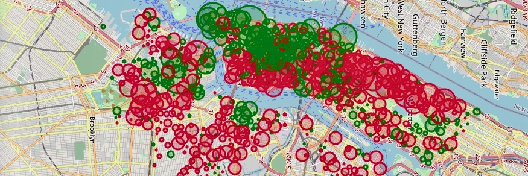
New York CitiBike Trip Histories
In recent years, Bike Sharing has become popular in a growing list of cities around the world. The NYC “CitiBike” bicycle sharing scheme went live in 2013, and has been expanding ever since, both as measured by daily ridership as well as the expanding geographic footprint incorporating a growing number of “docking stations”. One problem that many bikeshare systems face is money. An increase in the number of riders who want to use the system necessitates that more bikes be purchased and put into service to accommodate them. We seek to examine Citibike trip data to extract meaningful relations and conclusions which will provide insight for executive sectors. Our findings can be categorized under three titles: usage trends, common locations, expansion policy.
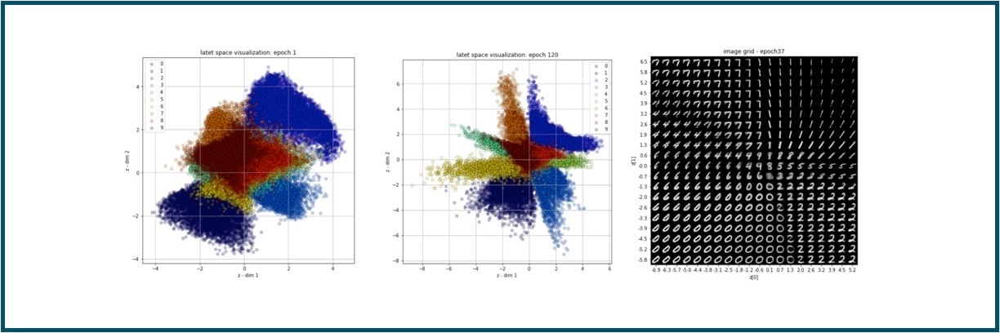
Variational AutoEncoder(VAE)
VAE is a way to perform efficient inference and learning in directed probabilistic models, in the presence of continuous latent variables with intractable posterior distributions, and large datasets? It introduces a stochastic variational inference and learning algorithm that scales to large datasets and, under some mild differentiability conditions, even works in the intractable case. This works contributions is two-fold. First, we show that a reparameterization of the variational lower bound yields a lower bound estimator that can be straightforwardly optimized using standard stochastic gradient methods.
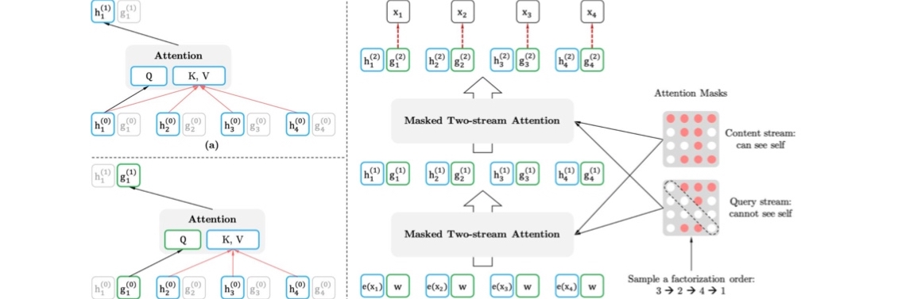
XLNet for Hateful Twitter Capturing
With accordance to general rules of social media platforms, some posts which include hate-speech are prohibited. This phenomenon is more important in twitter as users can stay unrecognized only sharing a line of words. In this project one of the most common Transformer models XLNet is used to capture such hate-full comments.
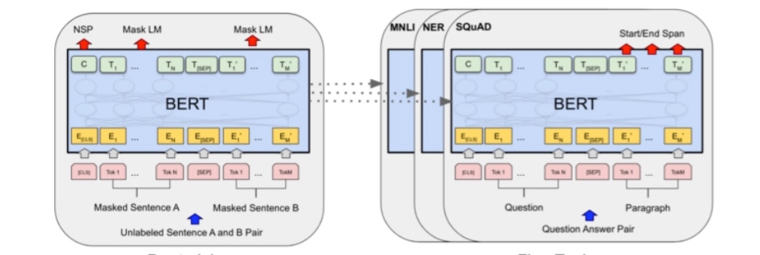
Hate Speech Detection with Bidirectional Encoder Representations from Transformers(BERT)
With accordance to general rules of social media platforms, some posts which include hate-speech are prohibited. This phenomenon is more important in twitter as users can stay unrecognized only sharing a line of words. In this project one of the most common Transformer models BERT is used to capture such hate-full comments.
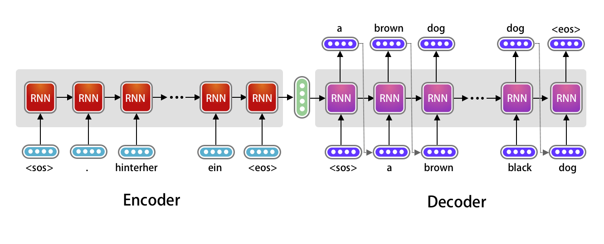
Sentence Generation with Long-Short-Term-Memory
In this project, a sentence generator is developed using LSTM modules. To optimize the final model, there are several aspects that can be optimized. Among those aspects, Hidden Dimension, Number of Layers, Embedding Dim, and Learning Rate was studied. n case studies other parameters of the model was fixed to ensure accurate comparision.
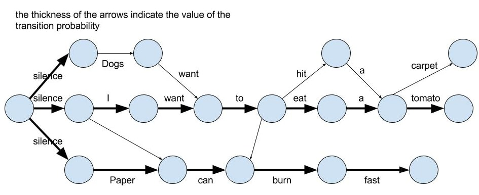
Word-level vs Char-level Ngrams Language Models
N-Gram as the most intuitive computational language model can be implemented in the word-level or the char-leverl while having freedom-of-choice in terms of the N variable. In this project a fair comparision of uni-gram and bi-gram models in the word and charachter level. The result of the study, consistent with intuition, showed word-level LMs hold better results for generic tasks.
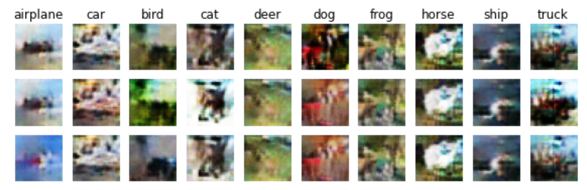
Auxiliary Image Synthesis with AC-GAN
Synthesizing high resolution photorealistic images has been a long-standing challenge in machine learning. In this project we use a new methods for the improved training of generative adversarial networks (GANs) for image synthesis. Construct a variant of GANs employing label conditioning that results in 128x128 resolution image samples exhibiting global coherence.
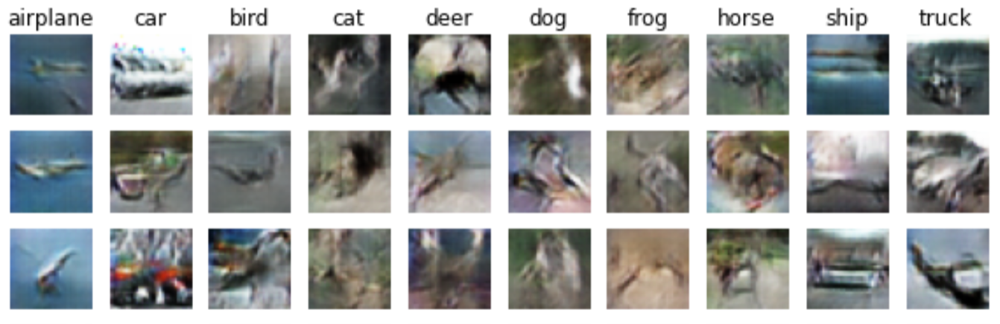
Conditional Generative Network (cGAN) for Image Synthesis
Generative Adversarial Nets were introduced as a novel way to train generative models. In this project we use the conditional version of generative adversarial nets, which can be constructed by simply feeding the data, y, we wish to condition on to both the generator and discriminator. We show that this model can generate CFAR-10 digits conditioned on class labels.
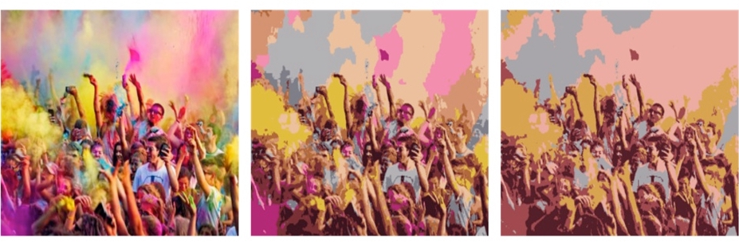
Color Compression with Unsupervised Spherical Clustering
The K-means algorithm can be used to compress the image. Unlike lossless compression, K-means uses lossy compression, so it is not possible to recover the original image from the compressed image. The larger the compression ratio, the larger the difference between the compressed image and the original image.
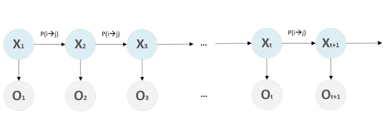
Review Sentiment Analysis using Hidden Markov Models
In this work, we examine the performance of Hidden Markov Models (HMM) in the recognition of sentiments and opinions in text. User-generated content in social media contain very meaningful information about public sentiment and stance and require automated methods to analyze them extract knowledge from them.
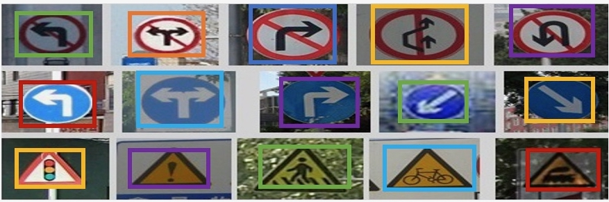
GTSRB: a case study on network structures
The German Traffic Sign Benchmark is a multi-class, single-image classification challenge held at the International Joint Conference on Neural Networks (IJCNN) 2011. In this case study we examine the effect of common components in CNNs(including normalization layers) on the traceability and generalization capabilities
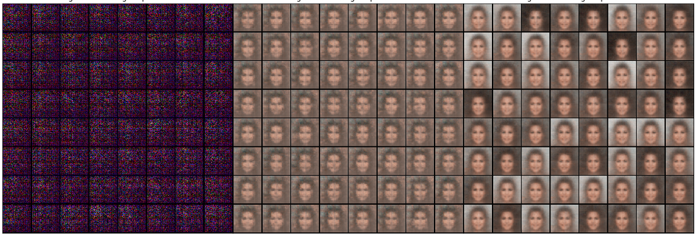
Representing Faces on Low Dimensional Manifolds
VAE, as an extended version of Auto Encoders, can be used to model a low dimensional distribution of faces. given that, one will be able to regress, generate and compare faces accordingly. In this work I trained a VAE on the CelebA dataset.
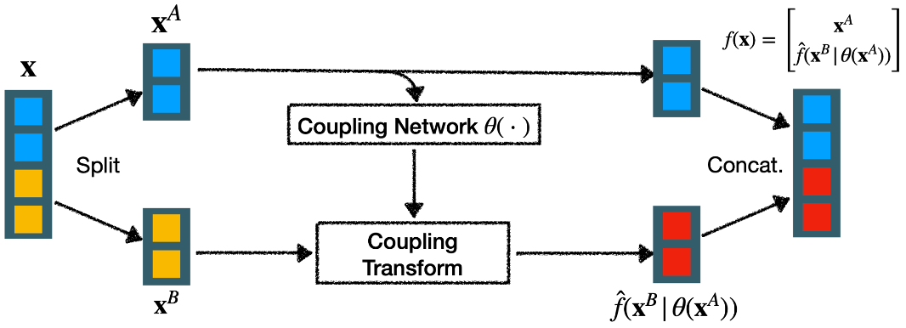
Real-Valued Non-Volume Preserving Transformations for Faces
Unsupervised learning of probabilistic models is a central yet challenging problem in machine learning. Specifically, designing models with tractable learning, sampling, inference and evaluation is crucial in solving this task. RealVNP extends the space of such models resulting in an unsupervised learning algorithm with exact log-likelihood computation, exact sampling, exact inference of latent variables, and an interpretable latent space. In this work such model is used to learn the underlying dist of faces.
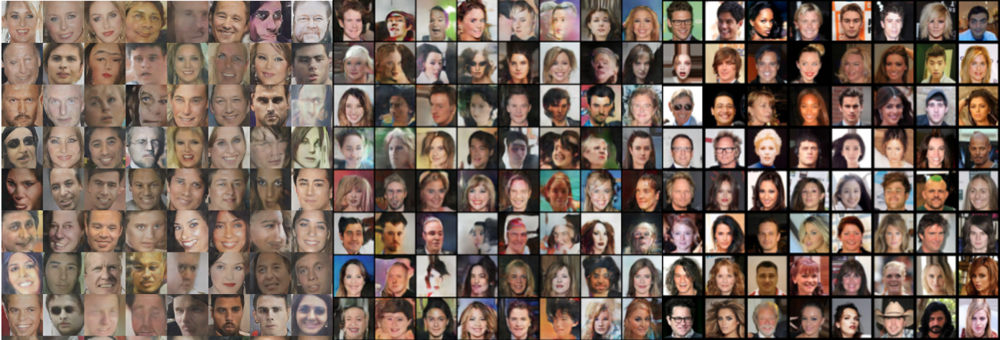
Fake-Face Recognition with Generative Neural Networks
Deep learning methodologies have been used to create applications that can cause threats to privacy, democracy and national security and could be used to further amplify malicious activities. One of those deep learning-powered applications in recent times is synthesized pictures of famous personalities. In this work, a common GAN is used not as a generative model, but as a discriminator which recognizes fake faces from real ones.